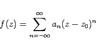
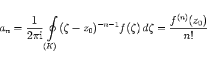
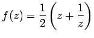
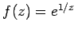
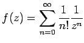

Inhalt Index DeskTop Bronstein

 Funktionentheorie Potenzreihenentwicklung analytischer Funktionen Isolierte singuläre Stellen und der Residuensatz
Funktionentheorie Potenzreihenentwicklung analytischer Funktionen Isolierte singuläre Stellen und der Residuensatz


Wenn eine Funktion f(z) in der Umgebung eines Punktes z0 analytisch ist, nicht aber in z0 selbst, dann heißt z0 eine isolierte singuläre Stelle der Funktion  . Ist f(z) in der Umgebung von z0 in die LAURENT-Reihe
. Ist f(z) in der Umgebung von z0 in die LAURENT-Reihe
|  | (14.51) |
entwickelbar, dann können die isolierten singulären Stellen nach dem Verhalten der LAURENT-Reihen eingeteilt werden:
|  | (14.52) |
über. Die Funktion f(z) ist dann auch im Punkt z0 analytisch, wenn f(z0) =a0 ist oder wenn z0 eine hebbare Singularität ist.
| Beispiel |
|
 hat an der Stelle z=0 einen Pol 1. Ordnung. |
| Beispiel |
|
Die Funktion , deren LAURENT-Reihe  lautet, hat an der Stelle z=0 eine wesentliche Singularität. |